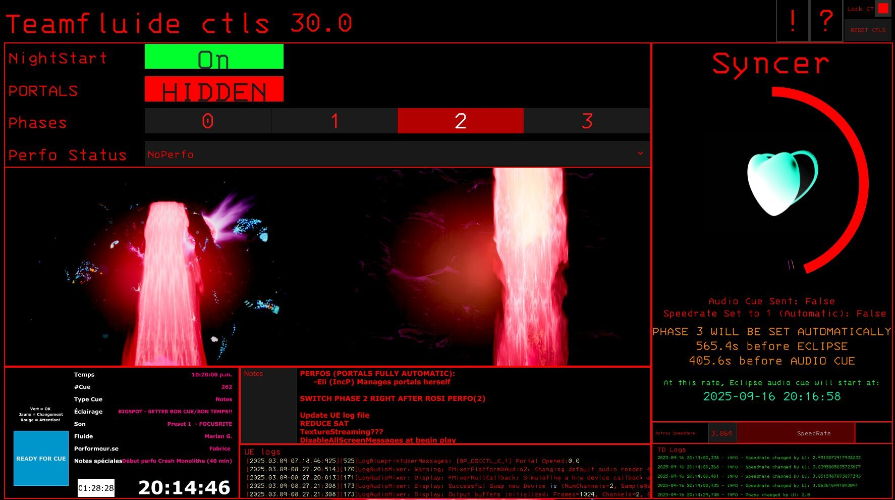
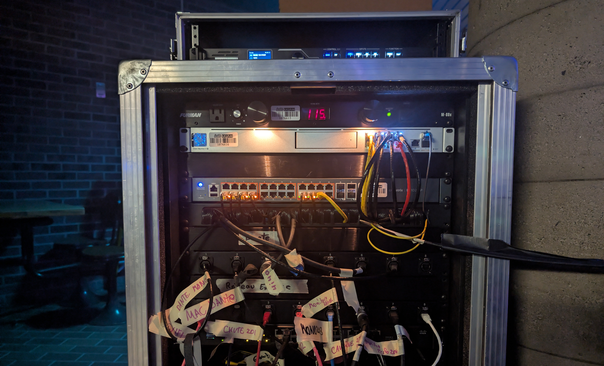
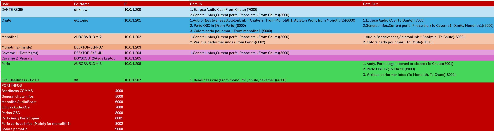

EXOTOPIE
[WIN 2025]
Exotopie is an interactive immersive experience that took place at the legendary Agora of UQAM during the 2025 edition of LUMINO by Quartier des Spectacles. The project was a total transformation of the Agora into an extra-terrestrial landscape that the audience would see evolve throughout the night.
Everything was designed to interact with other elements of the landscape to create a feel of inhabiting something alive. The waterfall along with its start would drive the evolution of the environment throughout the night along with the performers.
In short, Exotopie is an 8 hours timed show, 3 phases, 3 zones, 14 performers accross 9 performances and a lot of love <3.
CONTRIBUTIONS
For the project's pitch to Quartier Des Spectacles, I rebuilt the UQAM's agora to a scale of 1:1 in Unreal to showcase the immersion potential of the idea we had in mind. The previs featured NDI inputs to test different projection footages as well as UE's virtual dmx lights to pre-conceive vrious sequences.
The game was simply started on a computer for different members of the jury to explore the environment and give feedback on the concept. The project was greenlit and we were given the go-ahead to start production.
The waterfall was the core element driving the phases into which the environment was in. Several interactions between performers, lighting and the waterfall projections were occurring at any given time.
The workflow we opted for was a TouchDesigner controller patch that would send OSC messages to Unreal when necessary, to control the star's position, different phases materials and physics, as well as virtual DMX lights pass through to coincide with the physical lights on site.

Controls
- NightStart: - Start the nights sequence
- Portals: Opening Greenscreen portals on the waterfall to accomodate VJs creativity
- Perfo Status:Switching to various performers presets and gates
- Phases: Different phases of the event, Phase 3 was handled automatically via the Syncer.
- Syncer: Gradually synchronize the star position to the desired location at a given time.
The most useful and important part of our UI was without a doubt the Syncer. A song was made to be played along the eclipse to create a perfectly synced crescendo effect. All I had to do was to slightly adjust Unreal's sequence speedrate to delay or accelerate the timing at which the audio cue will start.
TD would start the audio cue precisely 60.2 seconds before the eclipse would occur because the come-up of the songs had this exact duration before climax. The syncer guaranteed a seemless yet perfectly synced experience to something you would see evolve throughout the entire night.
Simple maths, yet saved us from a lot of headaches and potential mistakes.
For deployment, several machines would talk to each other to send crucial informations for coherence and synchronization. This includes phase changes, audio cues, colors, performers influence on the waterfall etc.
I managed the network setup and configuration of the Ubiquity rack and the data flow infrastructure of every informations we were flying around.
Rack:

Data transmission technical table:

RECAP
More info at https://exotopie.uqam.ca/info
Features used:
- Custom DMX Fixtures
- Realtime material modifications
- OSC and DMX reception
- Compilation optimizations
- Complex UI development
- Various show-foolproofing solutions
- Layer-heavy composition and mapping
- 1:1 scale modeling workflow
- Blender-UE Bridge